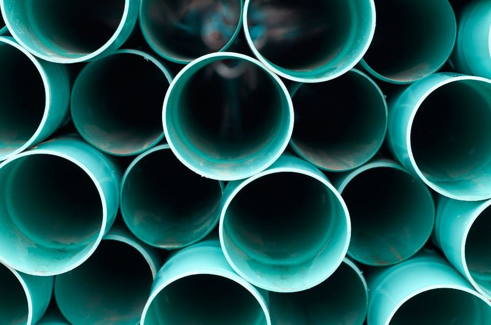

Om Brunnsö
Brunnsö startade 1952 när brunnsborraren Elof Brunnsö från Köpingsvik började borra efter vatten åt bönder på norra Öland. Firman växte med de kommunala vattenverken på 1960-talet och tog sitt första driftavtal för ett reningsverk 1978.
Brunnsö bygger och driver vattenverk, reningsverk, ledningsnät och avsaltning åt kommuner och industri runt Östersjön.
Brunnsö startade 1952 när brunnsborraren Elof Brunnsö från Köpingsvik började borra efter vatten åt bönder på norra Öland. Firman växte med de kommunala vattenverken på 1960-talet och tog sitt första driftavtal för ett reningsverk 1978.
Sedan noteringen 2006 har Brunnsö vuxit till 9 600 medarbetare och en omsättning på 22,4 miljarder kronor. Vi bygger anläggningarna, men lika mycket handlar om att driva dem: 412 vatten- och reningsverk i sex länder sköts av våra drifttekniker.
Varje dag renar vi vatten för sju miljoner
Brunnsö startade 1952 när brunnsborraren Elof Brunnsö från Köpingsvik började borra efter vatten åt bönder på norra Öland. Firman växte med de kommunala vattenverken på 1960-talet och tog sitt första driftavtal för ett reningsverk 1978.
Från slagborr till omvänd osmos
Sjuttiofem år av att leta, rena och leda vatten runt Östersjön.
- 1952Elof Brunnsö borrar sin första brunn i Köpingsvik på norra Öland.
- 1967Firman bygger sitt första kommunala vattenverk, i Mörbylånga.
- 1978Första driftavtalet: reningsverket i Nybro.
- 1995Relining blir ett eget affärsområde efter ett förvärv i Västerås.
- 2006Brunnsö tas upp till handel på Stockholmsbörsen.
- 2011Första avsaltningsverket invigs i Byxelkrok.
- 2021Brunnsö Baltic bildas efter köpet av en polsk reningsverksentreprenör.
Runt hela Östersjön
Varje land har egna laboratorier och en egen larmcentral, så att ett larm från ett vattenverk alltid besvaras på rätt språk inom fem minuter.
- Kalmar – huvudkontorÖlandskajen 6. Koncernledning, centrallaboratorium och 640 medarbetare.
- VisbyAvsaltningscentrum med drift av sju verk på Gotland.
- StockholmBrunnsö Ledning med 70 relininglag i Mälardalen.
- GöteborgReningsverk och industrivatten på västkusten.
- HelsingforsBrunnsö Vesi Oy, ledningsnät och vattenverk i Finland.
- ÅrhusBrunnsö Vand A/S, drift av 38 danska reningsverk.
- GdańskBrunnsö Woda, Polens största privata entreprenör inom avloppsrening.
- KlaipėdaVattenverk och ledningsnät i Litauen och Lettland.
- RostockBrunnsö Wasser GmbH, reningsverk längs den tyska Östersjökusten.
Senaste nyheterna och pressmeddelanden

Orderingången ökade med 14 procent, driven av läkemedelsrening och avsaltning.

Brunnsö ska bygga tre avsaltningsverk åt kommunerna längs Kalmarsund i ett kontrakt på 1,6 miljarder kronor.
Laboratoriet kan nu mäta 40 olika PFAS-ämnen och har dubblerat sin kapacitet.
Kontakta oss
- Huvudkontor
- Ölandskajen 6
392 31 Kalmar - Telefon
- 070-174 06 06
- E-post
- info@brunnsovatten.se
- Öppettider
- Växel vardagar 7.30–16, driftlarm dygnet runt